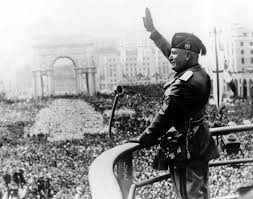
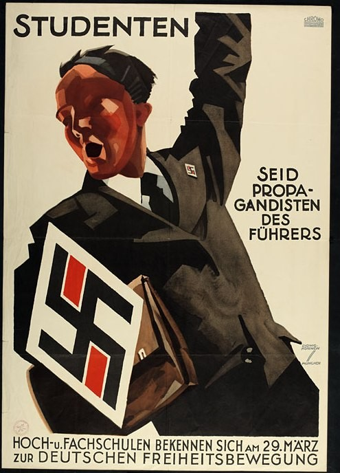
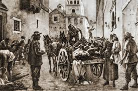
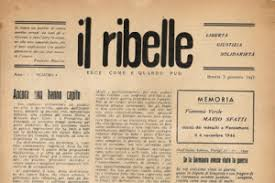
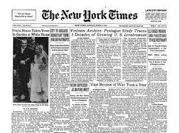
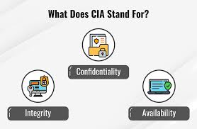
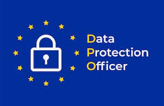

Libertà di Espressione e Sicurezza: tra mondo reale e virtuale
La parola non è mai neutrale. Chi ha controllato l'informazione ha controllato le menti. Nel Novecento i regimi totalitari lo facevano con ministeri e "veline". Oggi la stessa battaglia si combatte su algoritmi, piattaforme e bit, ma i meccanismi psicologici sono identici. Questo articolo ripercorre il filo che lega la propaganda del Novecento alle fake news di oggi e costruisce gli strumenti per difendersi.
I regimi totalitari del Novecento hanno dimostrato che controllare l'informazione significa controllare la realtà percepita dai cittadini. Tre modelli a confronto.

Il Ministero della Cultura Popolare emetteva ogni giorno alle redazioni le cosiddette veline, istruzioni precise su cosa pubblicare, come titolare e quali notizie tacere. La vaghezza era strategica: non vietava esplicitamente, ma induceva i direttori all'autocensura. Nel 1941 il ministero ordinò di non parlare delle lunghe file davanti ai negozi di alimentari. Il silenzio era propaganda: non una menzogna diretta, ma la cancellazione della realtà scomoda.

Il ministero di Goebbels controllava stampa, radio, cinema e arte. Goebbels teorizzò la propaganda come disciplina scientifica: non si trattava di convincere, ma di impregnare, far assorbire inconsapevolmente i messaggi del regime. Il principio della ripetizione è la base dell'effetto di mera esposizione: più una cosa viene ripetuta, più viene percepita come vera.
Lo Statuto del 1934 impose il realismo socialista come unico stile artistico ammesso. A differenza del fascismo, che lavorava per sottrazione, il modello sovietico era prescrittivo: imponeva per legge cosa creare e come rimodellare la mente dei cittadini.

Nel 1630, durante la peste di Milano, bastò il gesto di Guglielmo Piazza che sfiorò un muro per scatenare una psicosi collettiva. Nella Storia della Colonna Infame, Manzoni analizza come i giudici condannassero innocenti non perché non conoscessero la verità, ma perché vollero credere a una menzogna che soddisfaceva la rabbia del pubblico. Questo è il bias di conferma in azione.
| Milano · 1630 | Social Media · Oggi |
|---|---|
| Piazza sfiora un muro | Una persona ripresa al parco |
| «È un untore» | «È un ladro di bambini» |
| Nessuno verifica per paura | Migliaia di condivisioni in poche ore |
| Condanna sommaria | Aggressioni, minacce, licenziamento |
| La verità emerge troppo tardi | La smentita non raggiunge chi ha già condiviso |
Dove c'è censura, nasce sempre resistenza. La libertà di stampa non è mai stata un dato acquisito, ma una conquista fragile strappata a regimi e poteri forti da persone disposte a rischiare tutto.

Durante l'occupazione nazifascista, oltre 500 testate clandestine furono stampate in Italia a rischio della vita. Non erano solo strumenti di informazione: erano atti politici e morali. Teresio Olivelli, fondatore de Il Ribelle, fu arrestato e morì nel lager di Hersbruck il 17 gennaio 1945.

Daniel Ellsberg passò al New York Times documenti segreti che dimostravano come Nixon avesse mentito al Congresso sulla guerra del Vietnam. Il governo tentò di bloccare la pubblicazione. La Corte Suprema decise in favore della stampa.
Solo il 26% della popolazione mondiale vive in paesi con stampa libera, secondo l'indice RSF (Reporters Sans Frontières).
Creata intenzionalmente per ingannare. Spesso si diffonde perché fa leva su emozioni forti come paura, rabbia o indignazione.
Il fatto di partenza è reale, ma il titolo lo distorce o lo esagera. Uno studio dice che "troppo zucchero aumenta i rischi cardiovascolari" e il titolo diventa "Lo zucchero uccide, lo dice la scienza". Chi legge solo il titolo riceve un'informazione sbagliata.
Foto o video reali vengono associati a eventi diversi da quelli originali. Durante l'alluvione in Emilia-Romagna del 2023 circolarono immagini di alluvioni avvenute anni prima in altri paesi. Per verificare si possono usare Google Lens e TinEye.
L'articolo cita "uno studio di Harvard" senza indicare autori, anno o rivista. La citazione falsa sfrutta l'autorità di chi non ha mai detto nulla. Per verificare: Google Scholar, Wikiquote, Pagella Politica, Snopes.
Gli algoritmi dei social mostrano solo contenuti simili a quelli già consumati, creando una bolla dove si sente soltanto chi la pensa come noi. Il bias di conferma ci porta a credere subito a ciò che conferma le nostre idee. L'effetto di mera esposizione ci fa percepire come vera una cosa solo perché la sentiamo ripetere spesso. È esattamente il principio di Goebbels, applicato in automatico dai social.
La disinformazione non cambia solo le idee: viene usata anche dai criminali informatici per attaccare la sicurezza delle persone. Il meccanismo psicologico è lo stesso: sfruttare le emozioni per disarmare il pensiero critico.

| Pilastro | Significato | Applicazione |
|---|---|---|
| C Confidentiality |
Riservatezza | Le informazioni sono accessibili solo a chi ne ha diritto. Garantita da crittografia e autenticazione. |
| I Integrity |
Integrità | Le informazioni non vengono alterate da malintenzionati. Collegamento diretto con la lotta alle fake news. |
| A Availability |
Disponibilità | Le informazioni devono essere sempre fruibili, resistendo agli attacchi che vogliono silenziare la comunicazione. |
Una sorta di "notizia falsa" inviata via email o SMS. Il messaggio finge di arrivare dalla banca e crea urgenza artificiale: "Conto bloccato, clicca qui". Presi dal panico, inseriamo le credenziali e le consegniamo ai criminali. Contromisura: autenticazione a due fattori (2FA) e diffidare sempre dei messaggi urgenti.
Programmi dannosi come virus, trojan, spyware e ransomware che si installano nel dispositivo tramite link o allegati. Possono spiarci, rubare dati o cifrare i file chiedendo un riscatto. Contromisura: antivirus aggiornato, non aprire allegati sospetti, backup regolari.
La cifratura garantisce che solo il destinatario legittimo possa leggere le informazioni. Le chat crittografate end-to-end sono il moderno equivalente dei giornali clandestini. I firewall filtrano il traffico di rete bloccando connessioni non autorizzate. Le VPN permettono di aggirare la censura governativa e proteggere la propria navigazione.

Per costruire fake news personalizzate o lanciare attacchi di phishing mirati, i malintenzionati hanno bisogno di una cosa sola: i nostri dati personali. Il GDPR (General Data Protection Regulation, UE 2016/679) è la risposta europea a questa minaccia.
La storia ci insegna che la libertà è un diritto fragile. Nel Novecento i dittatori la sopprimevano con la forza e la censura. Oggi il rischio è più sottile: veniamo manipolati attraverso l'uso invisibile dei nostri stessi dati, algoritmi che costruiscono bolle di realtà e propagande che si diffondono alla velocità di un clic.
Come futuri professionisti dell'informatica abbiamo una responsabilità doppia. Come cittadini dobbiamo verificare le fonti e proteggere i nostri dati. Come tecnici non dobbiamo costruire sistemi che sfruttano le debolezze cognitive degli utenti. La programmazione e la gestione delle reti richiedono un codice etico tanto quanto un codice sorgente.